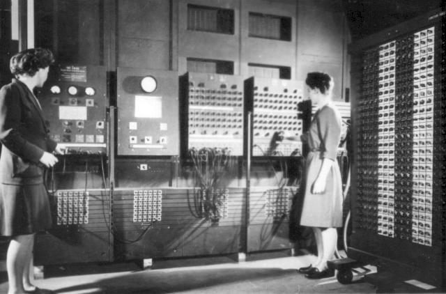

ENIAC
Az ENIAC (angolul Electronic Numerical Integrator And Computer) 1946. február 14-én készült el, ami hivatalosan az első programozható, elektronikus, digitális számítógép volt. 17 468 elektroncsövet, 7200 kristálydiódát és 1500 jelfogót építettek bele. 2,5 m magas volt, 40 m hosszú és 30 tonna. Körülbelül 5 millió kézi forrasztást tartalmazott. Az összeadást és a kivonást 1/5000 másodperc alatt végezte el, ami 500-szor gyorsabb volt, mint az akkoriban megjelent MARK II. Elektroncsöves rendszerű volt, a csöveket modulárisan építették be, ezért a karbantartása gyors és egyszerű volt, két naponta negyedórás szerelést igényelt.
Keletkezése
Az építését 1943-ban kezdték a Pennsylvaniai Egyetemen (Philadelphia, USA) John W. Mauchly főtanácsadó és ifj. J. Presper Eckert főmérnök vezetésével. Az amerikai hadsereg mint megrendelő részéről dr. Herman Goldstine tartalékos hadnagy, civilben matematikus, volt az összekötő tiszt.
Célja
A második világháború nagy lendületet (pénzt) adott az 1. generációs számítógépek építésének, fejlesztésének, és a kutatásoknak. A cél egy olyan gyors számítógép kifejlesztése volt, amivel bonyolult katonai – például bombázási, tüzérségi – feladatok számításait lehetett elvégezni.
Adatai
Az ENIAC paraméterei:
- U-alakú
- 30,5 méter hosszú
- 1 méter széles
- 3 méter magas
- 140 kW teljesítmény felvétel
- órajel: 100 kHz
- 17 468 elektroncső
- 7200 kristálydióda
- 1500 jelfogó
- 70 000 ellenállás
- 10 000 kondenzátor
- 6000 kapcsoló
- Műveletek elvégzésének ideje:
- 0,2 milliszekundum (összeadás, kivonás)
- 3 milliszekundum (szorzás)
- 30 milliszekundum (osztás)
Forrás: Wikipedia - ENIAC